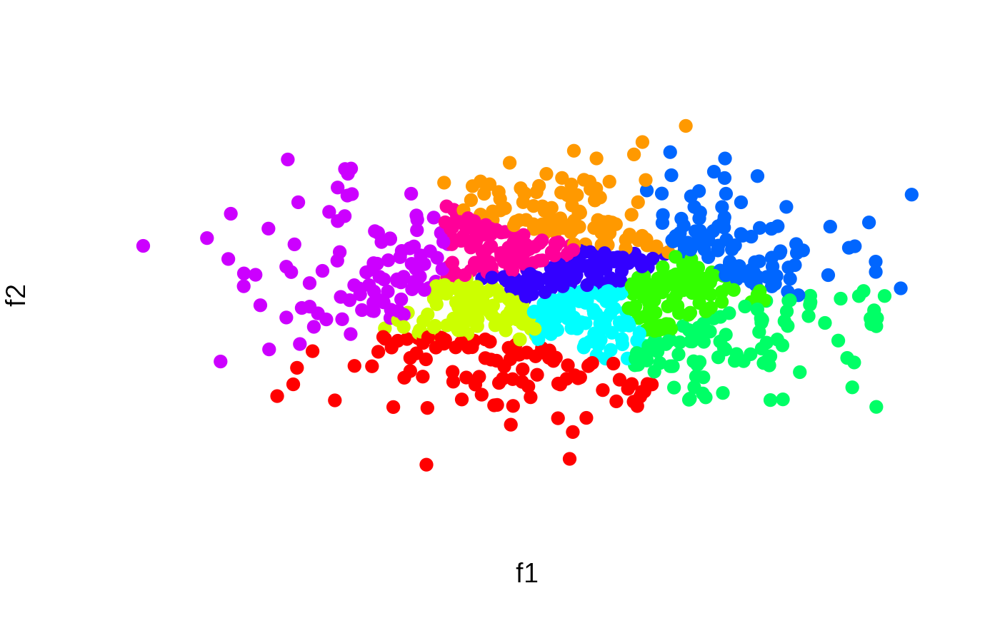

Create balanced clusters of equal size
balanced_clustering(x, K, method = "centroid")Source
The centroid method was originally developed and contributed by Meik Michalke. It was later rewritten by Martin Papenberg, who also implemented the integer linear programming method.
Arguments
- x
The data input. Can be one of two structures: (1) A feature matrix where rows correspond to elements and columns correspond to variables (a single numeric variable can be passed as a vector). (2) An N x N matrix dissimilarity matrix; can be an object of class
dist(e.g., returned bydistoras.dist) or amatrixwhere the entries of the upper and lower triangular matrix represent pairwise dissimilarities.- K
How many clusters should be created.
- method
One of "centroid" or "ilp". See Details.
Value
An integer vector representing the cluster affiliation of each data point
Details
This function partitions a set of elements into K
equal-sized clusters. The function offers two methods: a heuristic
and an exact method. The heuristic (method = "centroid")
first computes the centroid of all data points. If the input is a
feature matrix, the centroid is defined as the mean vector of all
columns. If the input is a dissimilarity matrix, the most central
element acts as the centroid; the most central element is defined
as the element having the minimum maximal distance to all other
elements. After identifying the centroid, the algorithm proceeds as
follows: The element having the highest distance from the centroid
is clustered with its (N/K) - 1 nearest neighbours
(neighbourhood is defined according to the Euclidean distance if
the data input is a feature matrix). From the remaining elements,
again the element farthest to the centroid is selected and
clustered with its (N/K) - 1 neighbours; the procedure is
repeated until all elements are part of a cluster.
An exact method (method = "ilp") can be used to solve
equal-sized weighted cluster editing optimally (implements the
integer linear program described in Papenberg and Klau, 2020;
(8) - (10), (12) - (13)). The cluster editing objective is the
sum of pairwise distances
within clusters; clustering is accomplished by minimizing this
objective. If the argument x is a features matrix, the
Euclidean distance is computed as the basic unit of the cluster
editing objective. If another distance measure is preferred, users
may pass a self-computed dissimiliarity matrix via the argument
x. The optimal cluster editing objective can be found via
integer linear programming. To obtain an optimal solution, the open
source GNU linear programming kit (available from
https://www.gnu.org/software/glpk/glpk.html) and the R package
Rglpk must be installed.
References
Grötschel, M., & Wakabayashi, Y. (1989). A cutting plane algorithm for a clustering problem. Mathematical Programming, 45, 59–96.
Papenberg, M., & Klau, G. W. (2021). Using anticlustering to partition data sets into equivalent parts. Psychological Methods, 26(2), 161–174. https://doi.org/10.1037/met0000301.
Examples
# Cluster a data set and visualize results
N <- 1000
lds <- data.frame(f1 = rnorm(N), f2 = rnorm(N))
cl <- balanced_clustering(lds, K = 10)
plot_clusters(lds, clusters = cl)

# Repeat using a distance matrix as input
cl2 <- balanced_clustering(dist(lds), K = 10)
plot_clusters(lds, clusters = cl2)